Autumn 2022
Coastal Carolina University Rebecca Bryan Gallery; Conway, SC
Spring 2019
Juanity Salazar Lowe Art Gallery; Imperial, CA
Spring 2019
Western Illinois University Art Gallery; Macomb, IL
Spring 2016
Earlville Opera House Gallery; Earlville, NY
Spring 2013
Angels Gate Cultural Center; San Pedro, CA
Autumn 2010
621 Gallery; Tallahassee, FL
Winter 2006
Los Angeles Union Station, CA
Autumn 2006
Albuquerque International Airport, NM
Spring 2022
Tokyo Metropolitan Art Museum; Tokyo, Japan
Winter 2022
First Street Gallery; New York, NY
Autumn 2021
Santa Ana College Art Gallery; Santa Ana, CA
Autumn 2020
Embed Gallery; Catsworth, CA
Spring 2018
Ann Street Gallery; Newburgh, NY
Autumn 2017
Beeler Gallery; Columbus College of Art and Design; Columbus, OH
Summer 2017
Arc Gallery; San Francisco, CA
Summer 2017
Sebastopol Center for the Arts; Sebastopol, CA
Summer 2017
Sacramento Fine Arts Center; Sacramento, CA
Spring 2017
St. Louis Artists Guild; St. Louis, MO
Spring 2017
Museum of Fine Arts, Florida State University; Tallahassee, FL
Autumn 2016
Eleanor D. Wilson Museum, Hollis University; Roanoke, VA; SECAC, Juror: Jenine Culligan, Eleanor D. Wilson Museum
Summer 2016
Fogelman Galleries of Contemporary Art, University of Memphis, TN Number: Art of the South; Juror: Chad Alligood, Crystal Bridges Museum
Spring 2016
FSP Casket Gallery; Minneapolis, MN
Spring 2014
Blair Art Center; Potomac, MD
Spring/Autumn 2012
UCLA Nano Science Institute; Los Angeles, CA
Autumn 2011
Buckham Gallery; Flint, MI
Spring 2010
Contemporary Artists Center; Troy, NY
Autumn 2009
Kearney Street Workshop 11th Annual Apature; San Francisco, CA
Autumn 2009
SCA Contemporary; Albuquerque, NM
Spring 2007
516 Arts; Albuquerque, NM; Juror: Laura Steward Heon, SITE Santa Fe
Autumn 2006
Grounds for Sculpture; Hamilton Township, NJ
Summer 2005
Harwood Art Center; Albuquerque, NM
Spring 2005
Jonson Gallery, University of New Mexico in Albuquerque; Juror: Joel Peter Witkin
Spring 2003
Tahiti Fête; Hilo, HI
Autumn 2002
Mauna Kea and Mauna Loa, HI
Autumn 1998
Franconia Sculpture Park; Shafer, MN
Spring 1998
Carleton College; Northfield, MN
Autumn 1996
Lacoste School of Arts Quarries; Lacoste, France
Spring 1993
Historic Southwest Museum; Los Angeles, CA
Spring 2018
Ruminate, Kalos Art Prize
Winter 2018
Lunch Ticket, Antioch University Los Angeles Profile Article
Summer 2017
Art Inquiries Vol. XVII, no. 1 Profile Article
Spring 2017
ArtScene Today Third Place Winner and Profile
Spring 2017
Broken Ground: New Directions in Land Art MOFAFSU Publication
Autumn 2016
SECAC Artist Fellowship
Autumn 2016
SECAC First Place Juror's Choice
Spring 2010
Resident Fellow, Contemporary Artists Center, NY
Autumn 2006
International Sculpture Center Outstanding Student Award, NJ
Autumn 2006
Sculpture Magazine
Spring 2005
Ana Mendieta Prize, UNM Graduate Juried Show
2004-2006
UNM Graduate Research and Travel Grants, NM
Spring 1997
Scholarship Workshop, Frogmen's Press, SD
Autumn 1993
Art Education Magazine
2017-Present
Independent Artist, San Diego, CA
2014-2016
Adjunct Professor, University of Alabama in Huntsville
2013-2014
Art Instructor, Bullis School, MD
2010-2012
Art Instructor, Manhattan Academy, MD
2008-2010
Adjunct Professor, Academy of Couture Art, CA
2007-2010
Art Instructor, LAUSD, CA
2003-2006
Graduate Instructor, University of New Mexico in Albuquerque
 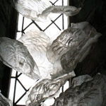
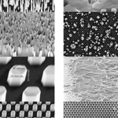
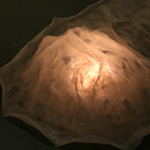
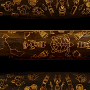
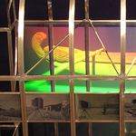
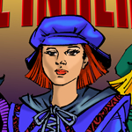
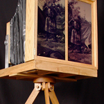
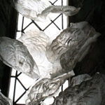
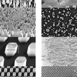
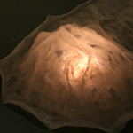
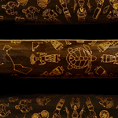
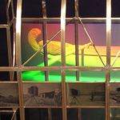
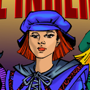
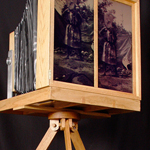